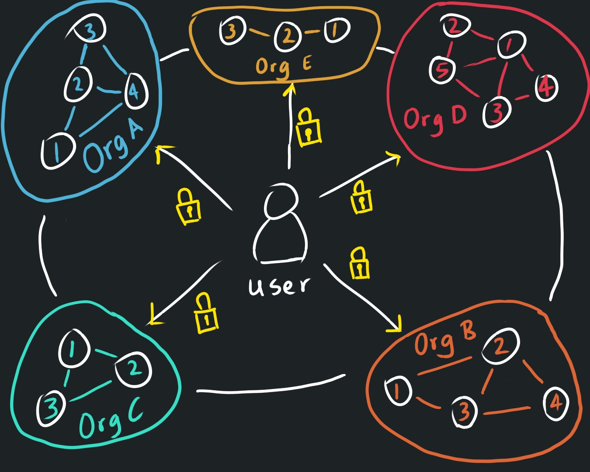

People talk about hedging their bets — not putting all their eggs in one basket, diversifying their portfolio to mitigate risk.
So why don’t we apply the same logic we use for financial decisions to our personal data?
Why do we still hand over our private information to individual corporations for the sake of “verification,” trusting them to handle it responsibly?